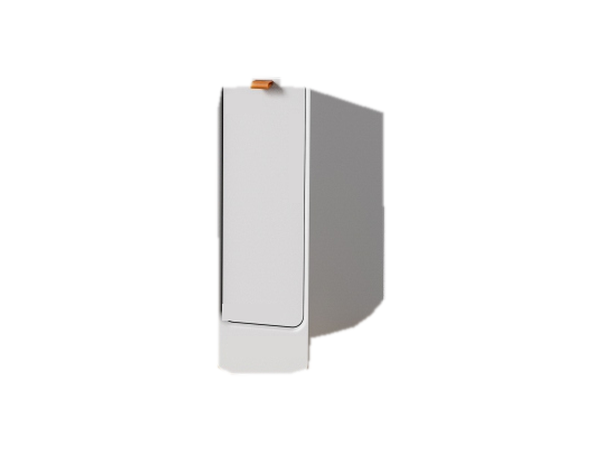

Sob a pia
Sob a piaRP-U07
Purificador RO sob a pia de 400–600 GPD
SKU: RP-U07
MOQ: confirmar ao consultar
Início/Produtos/Sistemas de RO sob a pia/ RP-U11

Sistemas de RO sob a pia
Purificador RO de três cartuchos (AM606R)
RP-U11 é uma família RO sob a pia de três cartuchos liderada pelo RP-U13 (600/800/1000G, 427 mm de altura, volume nominal de 6000 L), ao lado do RP-U11 (1000G fixo, 400 mm de altura) — mais duas variantes RP-U13 de maior capacidade (1000/1200G e 800/1000G). As especificações são confirmadas por modelo e pedido.
Solicitar orçamento para RP-U11
A tensão / frequência é configurável para o país de destino. Outras configurações são confirmadas por pedido.
RP-U11 é uma família RO sob a pia de três cartuchos liderada pela opção principal RP-U13 (600 / 800 / 1000 GPD, 315 × 203 × 427 mm, volume nominal de água purificada de 6000 L). A família também inclui uma opção fixa de 1000 GPD (315 × 203 × 400 mm, 2,6 L/min, 4500 L) e duas opções RP-U13 de maior capacidade de 1000 / 1200 GPD e 800 / 1000 GPD. A opção principal opera a ≤53 dB(A) com relação água pura/ralo de 2:1 e potência nominal de 65 / 95 / 130 W. Destina-se a donos de marca que querem uma família RO sob a pia silenciosa com escolha de capacidade.
Qual é a quantidade mínima de pedido?
O primeiro pedido é de 200 unidades por modelo, e os pedidos de reposição são de 500 unidades.
Posso pedir uma amostra antes de um pedido em volume?
Sim. As amostras ficam prontas em 15 dias, e a taxa da amostra é reembolsada no seu primeiro pedido em grande quantidade. Os pedidos em grande quantidade levam 40 dias após a aprovação da amostra e são enviados FOB Shenzhen.
Qual opção devo escolher?
Cotar como RP-U11 e especificar a opção: RP-U11 1000G, RP-U13 600/800/1000G, RP-U13 1000/1200G ou RP-U13 800/1000G. A opção principal é o RP-U13 600/800/1000G.
Quatro opções — cotar como RP-U11 e especificar a opção (RP-U11 1000G, RP-U13 600/800/1000G, RP-U13 1000/1200G ou RP-U13 800/1000G).
Passe o cursor sobre a imagem de uma variante para ver suas especificações. Em telas sensíveis ao toque, toque em uma imagem.



Especificações completas de cada variante, lado a lado. A tabela de especificações mais abaixo mostra os valores da opção principal.
| Especificação | RP-U11-1 — 600/800/1000G (AM606R) | RP-U11-2 — variante 1000G (M906R) | RP-U11-3 — variante 1000/1200G (AM901R) | RP-U11-4 — variante 800/1000G (AM902R) |
|---|---|---|---|---|
| Capacidade RO | 600 / 800 / 1000 GPD | 1000 GPD | 1000 / 1200 GPD | 800 / 1000 GPD |
| Caudal nominal | A confirmar por pedido | 2.6 L/min | ≥2.62 L/min | ≥2.1 / 2.62 L/min |
| Filtração | PP+C + RO + pós-carvão | PPC + RO + C | PPC + RO + pós-carvão | PP + fibra de carbono + RO + pós-carvão |
| Pura : ralo | 2:1 | A confirmar por pedido | Zero água residual | 2:1 |
| Ruído | ≤53 dB(A) | A confirmar por pedido | ≤53 dB(A) | ≤53 dB(A) |
| Potência nominal | 65 / 95 / 130 W | A confirmar por pedido | 120 W | 90 W |
| Dimensões (W×D×H) | 315 × 203 × 427 mm | 315 × 203 × 400 mm | 440 × 158 × 430 mm | 440 × 135 × 400 mm |
| Entrada | 0.1–0.4 MPa; 5–38°C | 0.1–0.4 MPa / 0.4–0.8 MPa | 0.1–0.4 MPa; 5–38°C | 0.1–0.4 MPa; 5–38°C |
| Volume nominal de água purificada | 6000 L | 4500 L | A confirmar por pedido | A confirmar por pedido |
| Tensão / frequência | Configurável para o país de destino | Configurável para o país de destino | Configurável para o país de destino | Configurável para o país de destino |
11 linhas de especificações do catálogo da ROPureOEM.
| Capacidade RO | 600 / 800 / 1000 GPD |
|---|---|
| Caudal nominal | A confirmar por pedido |
| Volume nominal de água purificada | 6000 L |
| Filtração | PP+C + RO + pós-carvão |
| Dimensões | 315 × 203 × 427 mm |
| Pura : ralo | 2:1 |
| Ruído | ≤53 dB(A) |
| Potência nominal | 65 / 95 / 130 W |
| Entrada | 0.1–0.4 MPa; 5–38°C |
| Tensão / frequência | Configurável para o país de destino |
| Outras configurações | A confirmar por pedido |
As especificações são retiradas do catálogo ROPureOEM. Quando um valor ainda não está confirmado, ele é listado como “Confirmado por pedido” — não publicamos valores não confirmados.
Sob a piaPurificador RO sob a pia de 400–600 GPD
SKU: RP-U07
MOQ: confirmar ao consultar
 Sob a pia
Sob a piaRO sob a pia com aquecimento por acumulação
SKU: RP-U08
MOQ: confirmar ao consultar
 Sob a pia
Sob a piaPurificador RO de alta capacidade com acesso frontal
SKU: RP-U09
MOQ: confirmar ao consultar
 Sob a pia
Sob a piaPurificador RO compacto de dois cartuchos
SKU: RP-U12
MOQ: confirmar ao consultar